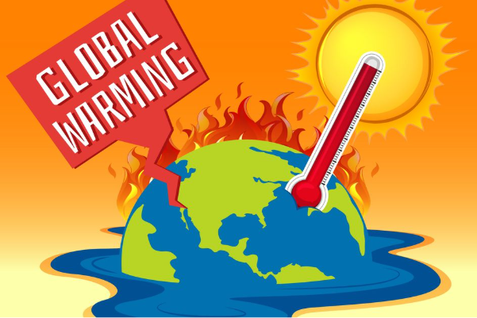

Pemanasan global adalah fenomena peningkatan suhu rata-rata atmosfer, laut, dan daratan bumi secara bertahap. Hal ini berdampak buruk bagi ekosistem dan keberlangsungan hidup manusia.

Salah satu dampak yang paling nyata adalah mencairnya es di kutub yang menyebabkan kenaikan permukaan air laut. Selain itu, cuaca menjadi tidak menentu (ekstrem) dan banyak spesies hewan kehilangan habitatnya.